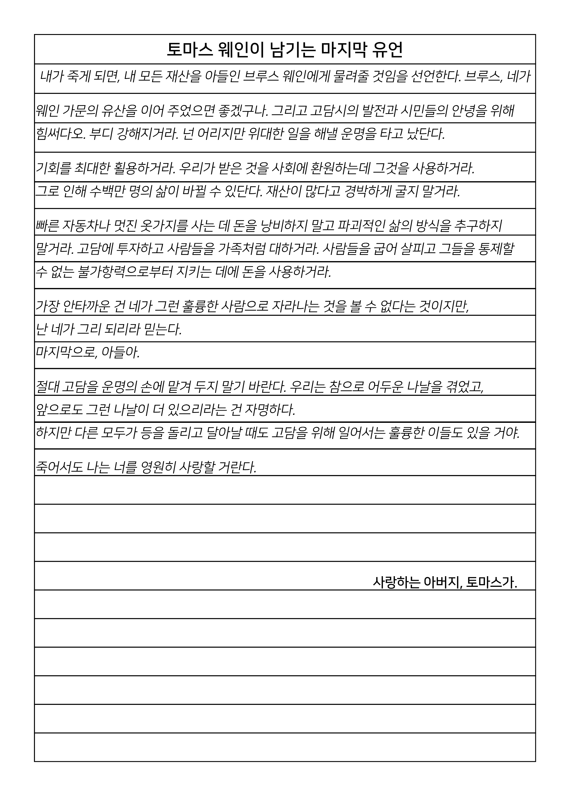

Philosophy
GCN Breaking News: The Wayne Murdered
Classification: CONFIDENTIAL / Source: GCN
나는 여섯 살이었다. 그날은 10월 말이었음에도 유달리 추웠다. 본디 고담시가 해안도시인 탓에 여름에 습하고, 겨울에 추운 것이 유난스러운 것도 아니었다. 그러나, 그날은 사람들의 가슴에도 서리가 맺히는 것은 아닐까 싶은 만큼 추운 날이었다. 아마도 그때는 내가 몸집이 어려 체구가 작은 탓에 더욱 그렇게 느꼈을지도 모르겠다. 멈추어 있는 순간은 마치 사진과도 같아서 아름답게 느껴진다. 하지만, 어떤 순간은 마치 적나라한 사진과도 같아서 잔인하고 고독하게 느껴진다.
그날은 괴테의 희곡인 《파우스트》를 고담시 대극장에서 보기로 부모님과 약속한 날이었다. 당시의 굵직한 뮤지컬 배우들이 대거 참여한 작품인지라 미국 전역의 상류층 가족들은 일부러 먼 길을 찾아와서 이를 관람하려 하는 일이 많았다. 내 부모님은 《파우스트》에 담긴 주제를 무척이나 좋아하셨으나 당시의 나로서는 이해할 수 없었다. 파우스트의 주제는 다음과 같다.
"인간이 끊임없이 노력한다면 구원받을 수 있다."
외과 의사였던 아버지와 교사였던 어머니를 생각한다면 의술로 사람을 살리고, 교육으로 다음 세대를 올바르게 성장시키는 것에 가장 충실한 캐치프레이즈가 아니었을까 생각한다. 그러나 어린 나의 눈에는 그저 기괴하고 무서운 분장을 한 배우들이 한 무더기로 등장하는 것을 몇 시간이나 가만 앉아서 보고 있어야 해서 지루할뿐더러 이따금 관객을 의도적으로 놀라게 하면서 극을 이어가는 것이 부담스럽기만 했다. 1막도 겨우 앉아 있었던 나는 끝내 2막이 시작하기 전에 집에 돌아가자고 부모님을 끈질기게도 설득했다. 부모님은 아쉬워하면서도 어린 외아들의 진심 어린 투정을 무시할 만큼 냉소한 분들이 아니었다. 결국, 2막이 시작하기 직전에 우리는 극장을 나섰다. 그 당시에는 입구로 다시 나가는 극장이 아니었다. 작은 쪽문을 통해 뒷골목으로 나가는 것이 유일한 길이었고 대다수의 시민들은 축축하고 냄새나는 골목길을 저마다의 이유로 기피했다. 이를테면 내 가족처럼 이타적인 집안이 아니라면 감히 발을 대고 싶어 하지도 않는 곳이 고담의 뒷골목이었다.
문을 닫고 몇 발자국 걸어갔을까. 저 멀리서 외투에 손을 푹 찔러넣은 채 막다른 길인 이 골목으로 빠르게 걸어오는 남자가 보였다. 아버지는 직감적으로 빈털터리 노숙자라는 걸 알았는지, 코트에서 미리 지갑을 꺼냈다. 나는 그제야 부모님이 어째서 가끔 지갑을 잃어버리고 오는지 알 수 있었다. 사람이 실수할 수도 있다고 아무렇지 않게 대답하시던 두 분의 미소 너머에는 늘 이런 사람들에게 가진 것을 아무렇지도 않게 내어주는 용기가 있었다. 그러나 그 남자는 주머니 속에서 왼손으로 권총을 꺼내 겨누며 돈을 내놓으라고 했다. 어머니는 나를 뒤로 숨기셨고, 아버지는 그런 어머니를 가리고 서서 침착한 목소리로 대답하셨다.
“진정하세요. 여기, 지갑 안에 지폐와 수표 몇 장이 있습니다. 족히 200달러는 될 겁니다. 가지고 가서 가족에게 따뜻한 저녁을 챙겨요. 누가 이렇게 큰돈을 선뜻 내주느냐고 하거든, 의사였다고 하십시오.”
“...목걸이. 여자의 목걸이도 내놔.”
“알겠습니다. 마사, 목걸이를 풀어요. 이 분은 해치지 않을 거야.”
남자는 어머니의 진주목걸이 또한 원하고 있어 쉽게 총을 거두지 않았다. 어머니는 불안하지만, 침착한 표정으로 두 손을 천천히 올려 목걸이를 풀어내려 했고, 아버지는 혹 그것이 젖은 바닥으로 떨어질까 싶어 어머니를 한 번 돌아보던 찰나였다. 남자는 그것을 품에서 총을 꺼내 반격하려는 시도로 여겼다. 남자의 총에서 우발적으로 총성이 울렸고, 그것은 아버지의 왼쪽 어깨를 관통하고, 어머니의 오른쪽 어깨 위를 스쳐 지나갔다. 고통에 신음하는 아버지와 깜짝 놀라 큰 비명을 지른 어머니를 내가 인지하기도 전이었다. 남자의 범행은 거기서 그치지 않았다. 어머니의 목걸이를 왼손으로 잡아당기며, 그것이 가지런히 걸려있던 가슴 위로 한 번 더 총을 쏘았다. 반동과 함께 뒤로 밀려 쓰러지는 어머니의 시선 위로 진주목걸이의 구슬들이 팝콘 터지듯 허공으로 흩날리다가 이내 젖은 길바닥 위로 내동댕이쳤다. 망가진 목걸이를 보며 남자는 그제야 겁에 질린 듯 그 자리를 도망가기 시작했다. 내가 정신을 차리니 엎드린 아버지의 옆으로 쓰러진 어머니가 있었다. 두 분의 피가 흘러 그 주변의 아스팔트 바닥은 더욱 더 새까맣게 변했고, 주저앉은 나의 바짓단은 부모님의 혈액으로 점점 검붉게 변해갔다. 마지막 남은 힘을 쥐어짜 돌아누운 아버지는 왼손으로 내 오른팔을 잡으셨다.
“아…. 아버지?”
“무서워 말아라…. 브루스….”
몇 마디 더 말씀하고 싶으셨던 것 같다. 하지만 그렇게 아버지의 숨은 끊겼다. 충격의 강도가 너무 심하면 눈물도 무엇도 반응할 수 없다고 하던가. 나는 그저 불안에 젖은 눈동자로 울상을 한 채, 그 자리에 가만히 주저앉아 있었다. 아버지의 마지막 말씀 이후로 수십 분이 흘렀고, 그 지역을 순찰하던 고담시경이 현장을 발견했다. 부모님의 시신이 있던 자리에는 시신의 테두리를 나타내는 흰색 테이프와 혈흔만이 남았다. 피로 물든 진주 구슬과 어머니의 손가방 등은 모두 증거보관실로 옮겨졌다. 더러워진 유아용 턱시도를 입고 진정실에서 몸을 떨고 있는 나는 모든 것이 막막했다. 당장 집에 어떻게 돌아가는지 따위가 문제가 아니었다. 내일이 없어졌다. 블라인드 너머로 연달아 울리는 전화벨과 출동이 바쁜 경찰들, 구금실에서 난동을 피우다가 제압당하는 범죄자들, 취재를 원하는 기자와 그것을 막으려는 경찰들까지. 한 아이가 눈앞에서 부모를 잃고 순식간에 고아가 된 것에 대해서는 누구도 관심을 가지지 않는 것 같았다.
“갓 자란 아이에게 너무 가혹하군.”
“정신차려. 저 아이에겐 집사가 있어. 망할 집사가 있다고.”
“애 듣겠다.”
자정을 넘어도 경찰청 철창살 안은 백주대낮 마냥 환하고 분주한 것이 더욱 나의 세상과 더욱 다른 세상처럼 느껴졌다. 생각들이 많아졌다. 현실적인 걱정들에 앞서 몸이 추웠다. 당시는 냉난방 시설이 지금과 같지 않았기에 해가 떠야 따뜻했고, 해가 지면 추웠다. 몸이 으슬으슬해 코를 훌쩍이고 있던 나에게 한 경사님이 다가오셨다. 두 손에 받쳐 든 것은 아버지의 코트였다. 아버지의 것이 맞는지 확인을 하러 오신 줄 알고 있던 나에게 그것을 어깨에 둘러주셨고, 깃까지 잘 여며주셨다. 착잡한 표정이지만, 나를 안심시키려고 억지로라도 미소를 지어 주시는 경사님은 나에게 괜찮다며 어깨를 다독여 주셨다. 물론 괜찮을 수 없다는 걸 나도, 경사님도 알고 있었다. 단지 그렇게 말해줄 사람이 아무도 없다는 내 심정을 헤아리신 것이었다.
아버지의 코트를 어깨에 두르고, 나는 조금이나마 안심할 수 있었다. 부모님을 잃고 난 후, 나는 인생을 모든 것을 바로잡는 행위에 바쳤다. 멈추면, 그 순간은 아름다울지 모른다. 하지만 아름다움은 잠시 빛나고 말 뿐이다. 영원한 것이 아니다. 그러나 노력은 영원하다. 인간의 끊임없는 의지만 있다면 말이다. 의지가 없으면, 노력은 굶주리게 된다. 그날 우리가 보려고 했던 희곡의 주인공: 파우스트는 ‘인간을 둘러싼 모든 굴레에 대항하여 싸우며 인간을 가두고 있는 지식과 능력의 한계에 도전하는 인물’이라고 한다. 나는 내가 거부한 희곡의 주인공과 정확히 똑같은 삶을 살아가고 있었다. 성년을 넘기고 난 후에야 웨인 엔터프라이즈의 전문 변호인단을 통해 아버지의 유언장을 전달받을 수 있었다. 유언장을 듣고나서 나는 아버지의 무덤 앞에 맹세했다.

토마스 웨인의 유언장